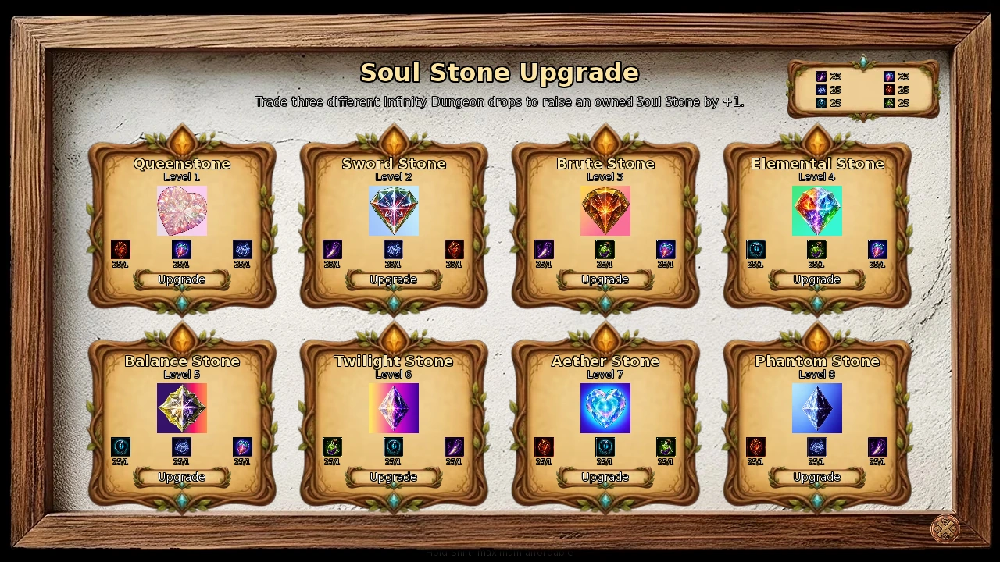
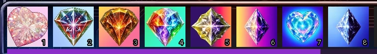
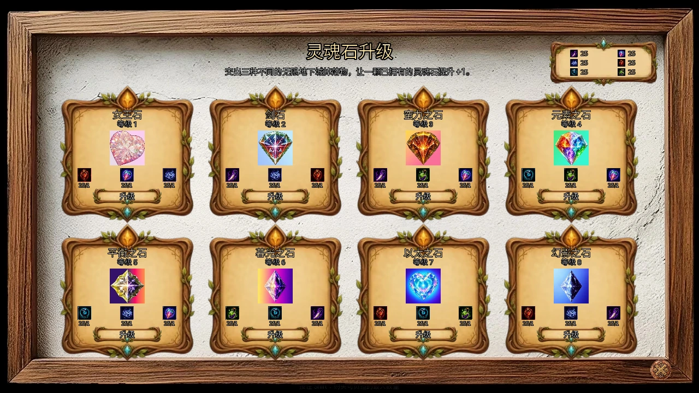

Select a screenshot to enlarge it. Screens show example inventories and progress.
Collect once, strengthen permanently
The eight Soul Stones are passive Key Items with their own levels. Once you acquire a stone, its effect works automatically: there is nothing to equip, activate or swap. All owned stones can work together. They start at level 1, and the shared leveling system has no level cap.
Seven stones are first found through Mining; Phantom Stone comes from the Thieves Guild route. After collection, you can improve them through daily Intimate Bonding, mining enhancement crystals, Theneas’s material service and selected shops or encounters. Fighting experience does not directly level stones.
For a clear first goal, collect the stones that support your preferred actions. After you own any five, Mining also becomes a repeatable source of stone levels. If you already have Infinity collectibles, compare Theneas’s recipe with the other purchases you are saving for.
What the eight stones do
| Stone | Effect per level |
|---|---|
| Queenstone | +1 maximum Health |
| Sword Stone | +1 damage on Attack and Quick Attack |
| Brute Stone | +1 damage on Stormslash and Power Strike |
| Balance Stone | Alternating increase to the minimum and maximum defense roll |
| Elemental Stone | +1 damage on Fire Magic and Ice Magic |
| Twilight Stone | +1 damage on Light Magic and Dark Magic |
| Aether Stone | +1 maximum Energy and +1 maximum Calm |
| Phantom Stone | +1 damage on each Assassinate follow-up from Quick Attack; improves Thieves Gloves |
Queenstone and Aether Stone increase capacity; other equipment or effects can further modify the final maximum shown. The attack stones affect the named actions, rather than every attack or spell.
Understanding Balance Stone
Level 1 adds +1 to the minimum defense roll. Level 2 gives +1 minimum and +1 maximum; level 3 gives +2 minimum and +1 maximum; level 4 gives +2 to both. Odd levels improve the lower bound first, and even levels catch up the upper bound. Your effective armor then multiplies the resulting defense roll, so main armor and Gastoff’s passive Forge bonuses work alongside the stone. This does not guarantee immunity to incoming damage.
Phantom Stone and Thieves Gloves
When you own the Gloves, Phantom Stone adds 0.1 percentage point per level to their existing bonus for eligible Infinity loot and Break & Enter checks. Those chances retain their own caps.
Owning both Phantom Stone and Thieves Gloves also enables a separate reward roll after normal or Infinity Dungeon victories, regardless of enemy or floor. Its chance rises by 0.002 percentage point per stone level: level 100 gives 0.2%, with a 100% cap at level 50,000. A success awards one item from a repeatable pool including pickaxes, resources and the six Infinity collectibles. It does not award another Soul Stone or Chronium. A Luck Potion can retry a failed roll through its normal effect.
Finding the seven mining stones
Go to Medieval → Village Outskirts → Mountain Foothills. Queenstone, Sword Stone, Brute Stone, Balance Stone, Elemental Stone, Twilight Stone and Aether Stone can appear as durable mining tiles. Phantom Stone is outside this pool.
- The ordinary combined chance for the stone category is about 0.013% per eligible tile-generation check, not per click.
- Only one first-acquisition stone can spawn per mining visit. The limit is used when it appears, even if you leave it unbroken.
- Owned stones are excluded. Once you own all seven mining stones, this category supplies no duplicates.
- Break the tile to collect the stone at level 1: 200 HP for most stones, 400 HP for Queenstone and Aether Stone.
After 60 paid swings in one visit, eligible tile-generation checks also have a 3% pity chance to select among still-available unowned stones and an iridescent tile. This is an extra chance, not a guaranteed stone on swing 60. Each category’s visit limit still applies.
Iron, copper and diamond pickaxes deal 1, 2 and 5 direct damage respectively. Diamond also hits a random adjacent tile. Blasts deal 15 damage to durable tiles and can help finish stones; plan pickaxes and Energy before committing to a find. Each paid swing consumes one selected pickaxe and 10 Energy.
Ordinary resource fragments are separate. Mining’s 100-fragment conversion produces resources such as ingots or Gems; it does not produce fractional Soul Stone ownership or partial stone levels.
Acquiring Phantom Stone
Phantom Stone is the reward for The Phantom Stone Raid in the Thieves Guild route. The mechanical requirements are:
- Arestes, Keira and Shadow at Romantic or higher.
- Shadow active as a worker, not merely previously recruited.
- Own Thieves Gloves and Dark Consolador.
- Visit the Thieves Guild for the eligible automatic scene.
Keira’s Gloves request requires Friend or higher and 150 Valuables. Arestes’s Dark Consolador action requires 500 Thieves Guild Clout; this is a reputation threshold, not a payment of 500 points. Follow the guild guide for route steps without treating the stone as a random monster drop.
Mining enhancement crystals
Once you own any five of the eight stones, Mining can generate Soul Enhancement crystals. Phantom Stone counts toward this threshold and can receive their rewards. These crystals improve stones you already own; they do not grant a missing stone.
| Crystal | HP | Total levels awarded | Ordinary eligible generation chance |
|---|---|---|---|
| Small | 100 | 5 | 0.35% |
| Medium | 180 | 10 | 0.125% |
| Large | 300 | 20 | 0.025% |
Break a crystal to receive its level pool. Each level is assigned randomly among your owned stones; the same stone can receive several levels, and you cannot choose the distribution. Blasts can break these crystals and still award their levels.
A separate guarantee counts paid swings after the five-stone unlock. After 60 swings without a new enhancement find, the next refill can place an enhancement crystal: Small 70%, Medium 25%, Large 5%. An enhancement tile spawning resets that counter. There is no one-crystal-per-visit cap.
This is separate from the older unowned-stone/iridescent pity. Leaving Mining clears the board and enhancement guarantee progress, so finish a valuable exposed crystal before ending the visit.

Daily Intimate Bonding
A character with a bonding action offers Intimate Bonding when you own their matching stone, your relationship is In Love, and you have not used that character’s bonding action that day. It costs 60 minutes and no Wealth, before applicable action-time modifiers, and adds one level to that stone.
The daily allowance belongs to the character. Visiting Robin or Nerida at another location does not give a second use, while visiting another trainer for the same stone can add another level. Recruitment, location access, vacation and content-access requirements still apply.
The tables show where the bonding action exists, not every place a character can appear. End times are exclusive: 15:00–18:00 means before 18:00. Odd and even refer to the current day number. If several characters share a location, use the NPC cycle control to select the right person.
Queenstone trainers
| Trainer | Bonding location | Availability |
|---|---|---|
| Elara | Elara’s Office, house | Any time |
| Sophie | Worker Quarters, house | 15:00–18:00; active worker |
| Jade | Master Bedroom, house | 09:00–14:00; after her move |
| Kasumi | Bar, house | 15:00–18:00 |
| Blinky | Arcane Room, house | Any time |
Sword Stone trainers
| Trainer | Bonding location | Availability |
|---|---|---|
| Valkyra | Security Office, house | 18:00–04:00; active worker |
| Muramasa | Knight’s Training Grounds | 08:00–18:00 |
| Muramasa | Training Room, house | 18:00–20:00 after his Training Room plot |
Brute Stone trainers
| Trainer | Bonding location | Availability |
|---|---|---|
| Yrsa | Bandit Hideout | 06:00–18:00 |
| Jennifer | Gym, Present Uptown | 06:00–21:00 |
Balance Stone trainers
| Trainer | Bonding location | Availability |
|---|---|---|
| Azariel | Secret Room, house | Any time |
| Lilu | Dojo, Present Downtown | 10:00–22:00 |
Elemental Stone trainers
| Trainer | Bonding location | Availability |
|---|---|---|
| Aziza | Arcane Shop | 10:00–18:00 |
| Sashina | Sorceress Home | 21:00–06:00 |
| Lindia | Training Room, house | 09:00–18:00; when available |
Twilight Stone trainers
| Trainer | Bonding location | Availability |
|---|---|---|
| Seraph | Seraph’s Sanctuary, Future | Any time |
| Lillian | Lillian’s Lair, Medieval | Any time |
| Kupie | Attic, Present home | Any time; once available |
Aether Stone trainers
| Trainer | Bonding location | Availability |
|---|---|---|
| Willow | Nurse’s Room, house | 09:00–16:00; active worker |
| Willow | Secluded Sanctuary | 06:00–18:00; also19:00–23:00 on odd days, before recruitment |
| Robin | Archery Range / Robin’s Hunting Lodge / Training Room | 09:00–18:00 /18:00–03:00 /06:00–09:00 |
| Nerida | Hot Springs / Spa / Virtual Spa | Any time at her three locations |
Phantom Stone trainers
| Trainer | Bonding location | Availability |
|---|---|---|
| Arestes | Secret Door, Thieves Guild | Any time while you can reach the room; guild entrance has its own hours |
| Shadow | Thieves Guild | 23:00–24:00 odd days;00:00–04:00 even days |
| Keira | Back Alleys | 00:00–04:00; when available |
If Blinky, Yrsa or Sashina are currently assigned to the Fortress, their bonding action is available at Allied Quarters instead of their normal home locations. The Fortress schedule is all day while that assignment is active.
Theneas’s Soul Stone Upgrade service
Find Theneas at the Forest Hut, available all day. The route is Medieval → Village Outskirts → Royal Hunting Grounds (Edge) → Secluded Trail → Forest Hut. Entering the hut requires the supporter unlock described by its hidden-woodland-path notice.
The Soul Stone Upgrade action separately checks the newer-content supporter unlock shown in its own notice, plus at least one owned Soul Stone. Reaching the hut does not by itself satisfy the service’s access requirement. These content checks are separate from stone ownership and recipe materials.
One purchase consumes one of each of three specified Infinity collectibles and raises the selected owned stone by one level. It costs no Wealth or in-game time. There is no ordinary daily upgrading limit or stone-level cap; the stock of the scarcest recipe ingredient limits your purchases.
| Stone | One of each drop for +1 level |
|---|---|
| Queenstone | Gilded Heart + Shimmering Heartscale + Soul Thread |
| Sword Stone | Void-Touched Fang + Soul Thread + Gilded Heart |
| Brute Stone | Void-Touched Fang + Mutagenic Ichor + Shimmering Heartscale |
| Elemental Stone | Abyssal Eye + Mutagenic Ichor + Shimmering Heartscale |
| Balance Stone | Abyssal Eye + Soul Thread + Shimmering Heartscale |
| Twilight Stone | Mutagenic Ichor + Abyssal Eye + Void-Touched Fang |
| Aether Stone | Gilded Heart + Abyssal Eye + Mutagenic Ichor |
| Phantom Stone | Gilded Heart + Soul Thread + Void-Touched Fang |
Hold Shift to quote the maximum affordable number of upgrades. Read the displayed quantity and total cost before buying; this can spend your entire usable stock for that recipe. The shop also supports holding a purchase control to repeat. It refines owned stones rather than selling missing ones.
These same collectibles have other uses, including Gastoff’s Gemmed Forge pieces, special gifts and other permanent items. Reserve whichever purchases matter to your current goals; the service does not require completing those other purchases first.

Where upgrade materials come from
The six collectible types are Void-Touched Fang, Shimmering Heartscale, Soul Thread, Gilded Heart, Abyssal Eye and Mutagenic Ichor. Their usual monster-loot roll belongs to Infinity Dungeon. Neither normal nor Infinity monster loot is the first-acquisition route for the Soul Stones themselves.
Ordinary eligible Infinity loot starts at 1% on floors 1–5, rises by one percentage point every five floors, and caps at 20% on floor 96+. Regular and major boss overrides can multiply that chance; affixes, Gloves and individual encounter rules also matter. The chosen collectible may be redirected if it is overstocked relative to the other balanced materials. See the Infinity guide for enemy pools and exact loot rules.
The Phantom Stone + Thieves Gloves extra reward is separate and can supply these collectibles even in a normal dungeon victory. Selected encounter rewards and other trading systems can also add stock. Check actual inventory quantities rather than assuming one enemy guarantees one particular material.
Other repeatable upgrades and encounters
| Source | Requirement and cost | Result |
|---|---|---|
| Shelly’s Gift Shop, 08:00–21:00 | Own Queenstone; Snail Slime costs 10 Sea Shells | +1 Queenstone level; repeatable |
| Ruxandra’s Blood Alchemy, Vampire Laboratory | Vampire 25+; own Elemental Stone; Crimson Grail costs 20 Blood Orbs | +1 Elemental Stone level; repeatable |
| Automated Blacksmith Forge, Mech dungeon scenario | Own Sword Stone; spend 2 Components | 80%: +1 Sword Stone level; failure spends the Components and deals 20 damage |
Shelly and Ruxandra support Shift bulk purchasing for these repeatable upgrades. Their currencies also buy other items, so compare what you want before spending a large stockpile.
Some optional dungeon encounters offer random owned-stone upgrades or larger bonuses with their own costs and risks. Read the choice before accepting: an upgrade reward generally improves an owned stone rather than collecting one you lack.
Awakening scenes are separate
After acquiring a stone, visiting the corresponding guide can trigger its one-time awakening scene. The passive effect already works from ownership; these scenes are not an equip or activation step, and they are distinct from daily trainers.
| Stones | Guide and location |
|---|---|
| Queenstone, Sword Stone, Aether Stone | Seraph — Seraph’s Sanctuary, Future |
| Brute Stone, Elemental Stone, Twilight Stone | Lillian — Lillian’s Lair, Medieval |
| Balance Stone | Azariel — Secret Room at the house |
| Phantom Stone | Arestes — Secret Door at the Thieves Guild |
If progress seems stuck
- A rare mining stone appeared but is not owned: it must be broken before you leave; appearing alone uses that visit’s spawn allowance.
- No enhancement crystals: own at least five different stones, then count paid swings within the current visit.
- Bonding is missing: check In Love, stone ownership, that character’s daily use, the exact action location and current availability.
- Theneas cannot upgrade: own the selected stone, meet the content unlock, and bring all three recipe items in whole quantities.
- Only some attacks improved: stones support specific actions. Sword Stone, Brute Stone and the spell stones are not interchangeable.
Owned stones and their levels are saved as permanent Key Item progress and retained through New Game+.
收集一次，持续成长
八种灵魂石都是带有独立等级的被动关键物品。获得后就会自动生效，不需要装备、激活或切换，持有的多种灵魂石可以同时发挥作用。初次获得为 1 级，共用的升级系统没有等级上限。
其中七种首次从采矿获得，幻影之石则来自盗贼公会路线。收集后，可通过每日「亲密羁绊」、采矿中的灵魂强化水晶、Theneas 的材料升级服务，以及部分商店或遭遇继续提升。战斗经验不会直接提高灵魂石等级。
起步时可优先寻找适合常用招式的灵魂石。持有任意五种后，采矿还能持续提供灵魂石等级。已有无限地下城掉落物时，则可比较 Theneas 的配方与其他想购买的物品，再决定如何分配库存。

八种灵魂石的效果
| 灵魂石 | 每级效果 |
|---|---|
| 女王石 | 最大生命 +1 |
| 剑石 | 攻击与快速攻击的伤害 +1 |
| 蛮力之石 | 风暴斩与强力打击的伤害 +1 |
| 平衡之石 | 交替提高防御掷值的下限与上限 |
| 元素之石 | 火焰魔法与冰霜魔法伤害 +1 |
| 暮光之石 | 光明魔法与黑暗魔法伤害 +1 |
| 以太之石 | 最大精力 +1、最大镇定 +1 |
| 幻影之石 | 快速攻击触发暗杀时，每次追加命中伤害 +1；增强盗贼手套 |
女王石与以太之石提高的是容量上限，其他装备或效果还可能进一步修正最终显示的数值。攻击类灵魂石只影响表中指定的招式，不会增强所有攻击与魔法。
平衡之石如何增加防御？
1 级使防御掷值下限 +1；2 级为下限、上限各 +1；3 级为下限 +2、上限 +1；4 级则两者各 +2。也就是单数等级先提高下限，双数等级再补上上限。之后，有效护甲等级还会放大这次防御掷值，因此主护甲与 Gastoff 的锻造护具可和灵魂石一起发挥作用。这不代表能够保证免疫所有伤害。
幻影之石与盗贼手套的联动
持有盗贼手套时，幻影之石每级会让手套在适用的无限地下城掉落与破门潜入检定中的原有加成，再增加 0.1 个百分点。这些概率仍受各自上限约束。
同时持有幻影之石与盗贼手套，还会在普通或无限地下城战斗胜利后，额外进行一次奖励判定，不限敌人或层数。概率每级增加 0.002 个百分点，例如 100 级为 0.2%，到 50,000 级达到 100% 上限。成功会从可重复奖励池中获得一件物品，候选包括镐、常规资源和六类无限地下城收集物，不包括另一枚灵魂石或时源矿。幸运药水也能按其正常效果重试失败的判定。
采矿收集七种灵魂石
前往中世纪 → 村庄郊外 → 山脚。女王石、剑石、蛮力之石、平衡之石、元素之石、暮光之石与以太之石都可能以耐久矿块的形式出现，幻影之石不在这个池中。
- 在符合条件的普通矿块生成判定中，灵魂石这一类别的合计概率约为 0.013%，不是每点击一次就独立获得这个概率。
- 每次采矿最多生成一枚首次收集用的灵魂石。出现时就会占用本次名额，即使最后没有击碎也一样。
- 已有的灵魂石会被排除，集齐七种采矿灵魂石后不会生成重复品。
- 必须击碎矿块，才能得到 1 级灵魂石。多数为 200 生命，女王石与以太之石为 400 生命。
同一次采矿完成 60 次付费挥镐后，符合条件的矿块生成判定还会有 3% 的保底判定概率，从本次仍可生成的未拥有灵魂石与虹彩矿块中选取一种。这是额外机会，不代表第 60 镐必定给一枚灵魂石，各类别的单次采矿限制仍然适用。
铁镐、铜镐、钻石镐的直接伤害分别为 1、2、5；钻石镐还会额外命中一个随机相邻矿块。爆炸对耐久矿块造成 15 伤害，有助于击碎灵魂石。每次有效挥镐会消耗一把所选镐和 10 精力，发现高耐久目标后要留意剩余资源。
常规矿物碎片是另一套进度。100 碎片合成矿锭、宝石等资源，不会合成「半枚灵魂石」，也不代表部分灵魂石等级。
获得幻影之石
幻影之石来自盗贼公会路线中的「幻影之石突袭」。触发需要：
- Arestes、Keira、Shadow 的关系都达到「浪漫感」或以上。
- Shadow 当前为在职员工，仅曾经招募过不够。
- 持有盗贼手套与暗影慰藉者。
- 到盗贼公会触发符合条件的自动剧情。
Keira 的手套委托要求朋友或以上关系，并消耗 150 贵重品。Arestes 的暗影慰藉者行动要求盗贼公会声望达到 500，这是声望门槛，不会支付或扣除 500 点。具体路线可查阅公会指南；不必靠刷怪寻找幻影之石。
用灵魂强化水晶继续成长
持有八种灵魂石中的任意五种后，采矿可以生成灵魂强化水晶。幻影之石也计入五种门槛，并能获得强化奖励。水晶只提升已经持有的灵魂石，不会给予缺少的种类。
| 水晶 | 生命 | 合计奖励等级 | 普通适用生成概率 |
|---|---|---|---|
| 小型 | 100 | 5 | 0.35% |
| 中型 | 180 | 10 | 0.125% |
| 大型 | 300 | 20 | 0.025% |
击碎后才会发放奖励。每一点等级都会分别随机分配给已持有的灵魂石；同一枚石头可能连续得到多点，也不能自行指定分配对象。用爆炸击碎水晶同样能领奖。
解锁后还有独立的挥镐保底：自上次生成强化水晶起，累计 60 次有效挥镐，便会为下一次矿块补充安排一块强化水晶，类型概率为小型 70%、中型 25%、大型 5%。自然生成强化水晶也会重置这个计数。一次采矿可以获得多块强化水晶。
这与前面「未拥有灵魂石／虹彩矿块」的保底分别计算。退出采矿会清空矿盘与强化保底进度，因此结束前应先处理已露出的高价值水晶。

每日亲密羁绊
持有对应灵魂石、与角色关系达到「恋爱中」，且当天尚未使用该角色的羁绊行动时，即可在指定地点选择「亲密羁绊」。基础消耗为 60 分钟，不花财富，之后再计算适用的行动时间修正；完成后对应灵魂石增加 1 级。
每日次数按角色共用。在另一个地点找到 Robin 或 Nerida，不会再多一次；同一种灵魂石若有其他羁绊对象，则可分别使用。角色招募、地点开放、休假及内容权限等正常条件仍然适用。
下表列出的是确实提供羁绊行动的地点，并非角色所有出现位置。结束时间不包含在内，15:00–18:00 即 18:00 前；单、双数日按当前天数计算。同一地点有多位角色时，可用 NPC 切换功能选到需要的人。
女王石的羁绊对象
| 角色 | 羁绊地点 | 时间与条件 |
|---|---|---|
| Elara | 店内：Elara 的办公室 | 全天 |
| Sophie | 店内：员工宿舍 | 15:00–18:00；须在职 |
| Jade | 店内：主卧 | 09:00–14:00；搬入后 |
| Kasumi | 店内：酒吧 | 15:00–18:00 |
| Blinky | 店内：奥术房 | 全天 |
剑石的羁绊对象
| 角色 | 羁绊地点 | 时间与条件 |
|---|---|---|
| Valkyra | 店内：安保办公室 | 18:00–04:00；须在职 |
| Muramasa | 骑士训练场 | 08:00–18:00 |
| Muramasa | 店内：训练室 | 18:00–20:00；完成他的训练室剧情后 |
蛮力之石的羁绊对象
| 角色 | 羁绊地点 | 时间与条件 |
|---|---|---|
| Yrsa | 强盗藏身处 | 06:00–18:00 |
| Jennifer | 现代上城区：健身房 | 06:00–21:00 |
平衡之石的羁绊对象
| 角色 | 羁绊地点 | 时间与条件 |
|---|---|---|
| Azariel | 店内：密室 | 全天 |
| Lilu | 现代市中心：道场 | 10:00–22:00 |
元素之石的羁绊对象
| 角色 | 羁绊地点 | 时间与条件 |
|---|---|---|
| Aziza | 奥术商店 | 10:00–18:00 |
| Sashina | 女术士之家 | 21:00–06:00 |
| Lindia | 店内：训练室 | 09:00–18:00；须已解锁她的到访 |
暮光之石的羁绊对象
| 角色 | 羁绊地点 | 时间与条件 |
|---|---|---|
| Seraph | 未来：Seraph 的圣所 | 全天 |
| Lillian | 中世纪：Lillian 的巢穴 | 全天 |
| Kupie | 现代住处：阁楼 | 解锁后全天 |
以太之石的羁绊对象
| 角色 | 羁绊地点 | 时间与条件 |
|---|---|---|
| Willow | 店内：护士室 | 09:00–16:00；须在职 |
| Willow | 隐秘圣所 | 招募前06:00–18:00；单数日另有19:00–23:00 |
| Robin | 射箭场／Robin 的狩猎小屋／训练室 | 09:00–18:00／18:00–03:00／06:00–09:00 |
| Nerida | 温泉／水疗馆／虚拟水疗馆 | 三个地点均为全天 |
幻影之石的羁绊对象
| 角色 | 羁绊地点 | 时间与条件 |
|---|---|---|
| Arestes | 盗贼公会的暗门 | 能进入房间时全天；公会入口另有开放时间 |
| Shadow | 盗贼公会 | 单数日23:00–24:00；双数日00:00–04:00 |
| Keira | 后巷 | 00:00–04:00；须已解锁她的出现 |
Blinky、Yrsa 或 Sashina 当前若被安排在要塞，羁绊行动会移到盟友居所，不再使用原本的住处地点；该安排生效期间，要塞的对应时间表为全天。
Theneas 的灵魂石升级服务
Theneas 全天位于森林小屋，路线为中世纪 → 村庄郊外 → 皇家狩猎场（边缘）→ 幽僻小径 → 森林小屋。进入小屋要求解锁入口提示中的支持者隐藏林间路线内容。
「灵魂石升级」行动还会另外检查其提示中的较新支持者内容权限，以及是否已持有至少一种灵魂石。能进入小屋，不代表服务本身的权限就已满足；这两项内容检查与石头持有、配方材料分别计算。
每次购买消耗三种指定无限地下城掉落物各一个，让选中的已拥有灵魂石提高 1 级，不花财富，也不推进时间。没有普通的每日升级次数上限或灵魂石等级上限，可买次数主要取决于配方中最少的那项库存。
| 灵魂石 | 每升一级，各消耗1个 |
|---|---|
| 女王石 | 鎏金之心 + 微光心鳞 + 灵魂之线 |
| 剑石 | 虚触之牙 + 灵魂之线 + 鎏金之心 |
| 蛮力之石 | 虚触之牙 + 异变灵液 + 微光心鳞 |
| 元素之石 | 深渊之眼 + 异变灵液 + 微光心鳞 |
| 平衡之石 | 深渊之眼 + 灵魂之线 + 微光心鳞 |
| 暮光之石 | 异变灵液 + 深渊之眼 + 虚触之牙 |
| 以太之石 | 鎏金之心 + 深渊之眼 + 异变灵液 |
| 幻影之石 | 鎏金之心 + 灵魂之线 + 虚触之牙 |
按住 Shift 可查看最大可负担数量。购买前先看清数量与合计消耗，这可能一次花完该配方能使用的库存。商店也支持按住购买控件连续购买。这项服务只能强化已有灵魂石，不能购买缺少的石头。
同样的掉落物还用于 Gastoff 的宝石护具、特殊礼物和其他永久物品。可按当前目标预留资源；系统不要求先买完其他物品，才能使用灵魂石服务。

升级材料从哪里来
六类收集物为虚触之牙、微光心鳞、灵魂之线、鎏金之心、深渊之眼、异变灵液。它们的常规怪物掉落判定属于无限地下城；普通或无限地下城的普通怪物战利品，都不是首次收集八种灵魂石的途径。
符合条件的无限地下城普通掉落，在 1–5 层为 1%，之后每 5 层增加 1 个百分点，到 96 层起封顶 20%。普通与大型首领的特定掉落规则可放大概率，词缀、盗贼手套与个别遭遇规则也有影响。若选中材料相对其他受平衡资源已过量，还可能改发其他材料。敌人池与详细判定可查无限地下城指南。
幻影之石与盗贼手套的额外奖励独立计算，即使在普通地下城战斗胜利也能提供这六类收集物。部分遭遇奖励与其他交易系统同样能补充库存。请以实际背包数量为准，不要把某个敌人视为指定材料的必掉来源。
其他商店与遭遇升级
| 来源 | 条件与消耗 | 效果 |
|---|---|---|
| Shelly 的礼品店，08:00–21:00 | 已拥有女王石；蜗牛黏液每次 10 海贝壳 | 女王石 +1 级，可重复购买 |
| 吸血鬼实验室：Ruxandra 的血液炼金 | 吸血鬼属性至少 25；已拥有元素之石；猩红圣杯每次 20 鲜血宝珠 | 元素之石 +1 级，可重复购买 |
| 机械地下城遭遇：自动铁匠熔炉 | 已拥有剑石；支付 2 组件 | 80% 概率使剑石 +1 级；失败仍消耗组件，并受到 20 伤害 |
Shelly 与 Ruxandra 的这些重复升级也支持 Shift 批量购买。海贝壳与鲜血宝珠还可换其他物品，大量花费前可先比较用途。
部分可选地下城遭遇能让随机持有的灵魂石升级，或提供更大幅度的奖励，但各有资源消耗和风险。确认选项后再接受；「升级奖励」通常只增强已有石头，不能代替首次收集。
觉醒剧情不等于激活
获得灵魂石后，拜访对应引导者可触发一次性的觉醒剧情。被动效果从持有时就已生效，不需要等觉醒才能装备或启用；剧情中的引导者，也不一定就是每天为这枚石头升级的羁绊对象。
| 灵魂石 | 引导者与地点 |
|---|---|
| 女王石、剑石、以太之石 | 未来：Seraph 的圣所 |
| 蛮力之石、元素之石、暮光之石 | 中世纪：Lillian 的巢穴 |
| 平衡之石 | Azariel，店内密室 |
| 幻影之石 | Arestes，盗贼公会暗门 |
进度停住时检查什么
- 矿盘上出现过石头，背包却没有：必须在离开前击碎；出现时就已占用本次的首次收集生成名额。
- 没有强化水晶：先持有至少五种灵魂石，再按本次采矿的有效挥镐次数计算。
- 亲密羁绊不见了：检查恋爱中关系、石头持有状态、当天是否用过、是否在正确地点，以及角色当前是否可见。
- Theneas 无法升级：确认已拥有选中的石头、所需内容已解锁，并备齐三种配方物品的完整数量。
- 只有部分招式变强：各灵魂石只增强指定行动，剑石、蛮力之石和魔法类石头不能互相替代。
已持有的灵魂石与等级会作为永久关键物品进度保存，并保留到新游戏+。
Adapted and updated from the community Chronoromancer Wiki. Community source and history · CC BY-SA 4.0. Game images © Chronoromancer Studio.